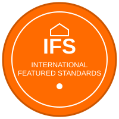

EN
EN
 FR
FR
 AR
AR
 HY
HY

Եվրոպական գերազանցություն սննդի անվտանգության և որակի մեջ
IFS (Միջազգային Առանձնահատուկ Ստանդարտներ) Սննդի Ստանդարտը GFSI-ի կողմից ճանաչված սննդի անվտանգության և որակի ստանդարտ է, որը մշակվել է եվրոպական մանրածախ վաճառողների կողմից՝ սննդամթերքի անվտանգությունն ու որակն ապահովելու համար։ Ավելի քան 25,000 սերտիֆիկացված ընկերություններով ամբողջ աշխարհում, IFS Սնունդը հատկապես կարևոր է եվրոպական մանրածախ վաճառքի ցանցերի և սննդի սպասարկման ընկերությունների մատակարարների համար։
Սկզբնապես ստեղծված գերմանական, ֆրանսիական և իտալական մանրածախ վաճառքի ֆեդերացիաների կողմից, IFS Սնունդը դարձել է սննդի անվտանգության կառավարման համաշխարհային ճանաչված չափանիշ՝ կենտրոնանալով արտադրանքի անվտանգության, որակի, օրինականության և իսկականության վրա մատակարարման շղթայի ամբողջ ընթացքում։
Մեր IFS Սննդի սերտիֆիկացումը ընդգծում է Շահիրյանի պարտավորվածությունը բավարարելու եվրոպական և միջազգային շուկաների պահանջած խիստ ստանդարտները։ Այս սերտիֆիկացումը ցույց է տալիս՝
IFS Սնունդը կազմակերպված է վեց հիմնական բաժիններով, որոնք ծածկում են սննդի արտադրության բոլոր ասպեկտները՝
IFS Սննդի սերտիֆիկացումը կարևոր է Շահիրյանի հաջողության համար եվրոպական շուկաներում։ Ստանդարտի կենտրոնացումը թափանցիկության, հետագծման և արտադրանքի ամբողջականության վրա կատարյալ համապատասխանում է մեր ընտանիքի արժեքներին և ձավարի ցորենի արտադրության ավանդական մոտեցմանը։
Մեր IFS սերտիֆիկացումը հնարավորություն է տալիս մեզ մատակարարել Եվրոպայի ամենահեղինակավոր մանրածախ վաճառողներին և սննդի արտադրողներին՝ բերելով հայկական խոհարարական ժառանգությունը մայրցամաքի խոհանոցներ։
IFS Սնունդը օգտագործում է միավորների համակարգ, որը պարգևատրում է ընկերություններին հիմնական համապատասխանությունից գերազանցության համար։ Շահիրյանում մենք ոչ միայն բավարարում ենք IFS պահանջները, այլև ձգտում ենք ավելի բարձր մակարդակի միավորների, որոնք ցույց են տալիս մեր առաջադեմ սննդի անվտանգության մշակույթը և գործառնական գերազանցությունը։
Այս պարտավորվածությունը գերազանցելու ստանդարտները արտացոլում է մեր ընտանիքի փիլիսոփայությունը՝ բավարար լինելը երբեք բավարար չէ, երբ խոսքը վերաբերում է սննդի անվտանգությանը և որակին։
Շահիրյանի IFS Սննդի սերտիֆիկացումը ներկայացնում է մեր կապը հայկական ավանդույթի և եվրոպական գերազանցության միջև։ Այն ապահովում է, որ մեր ձավարի ցորենը, որը պատրաստվում է սերունդներով փոխանցված մեթոդներով, համապատասխանում է այսօրվա ամենապահանջկոտ հաճախորդների և մանրածախ վաճառողների սպասվող խիստ ստանդարտներին։